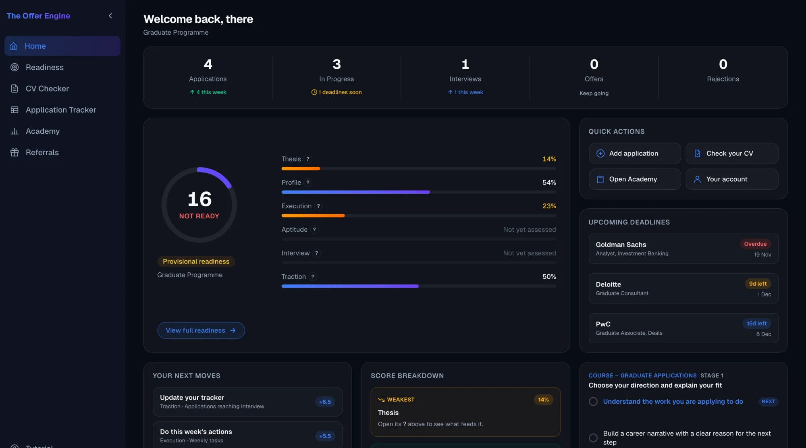
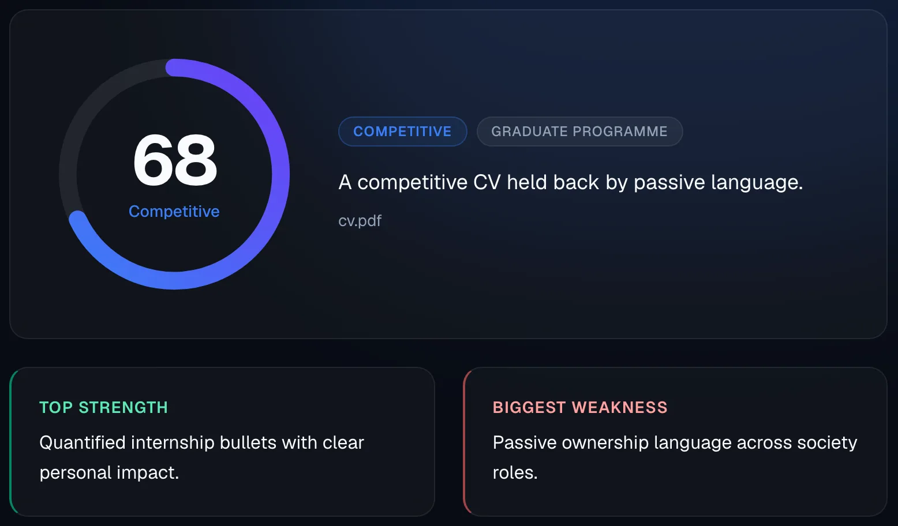
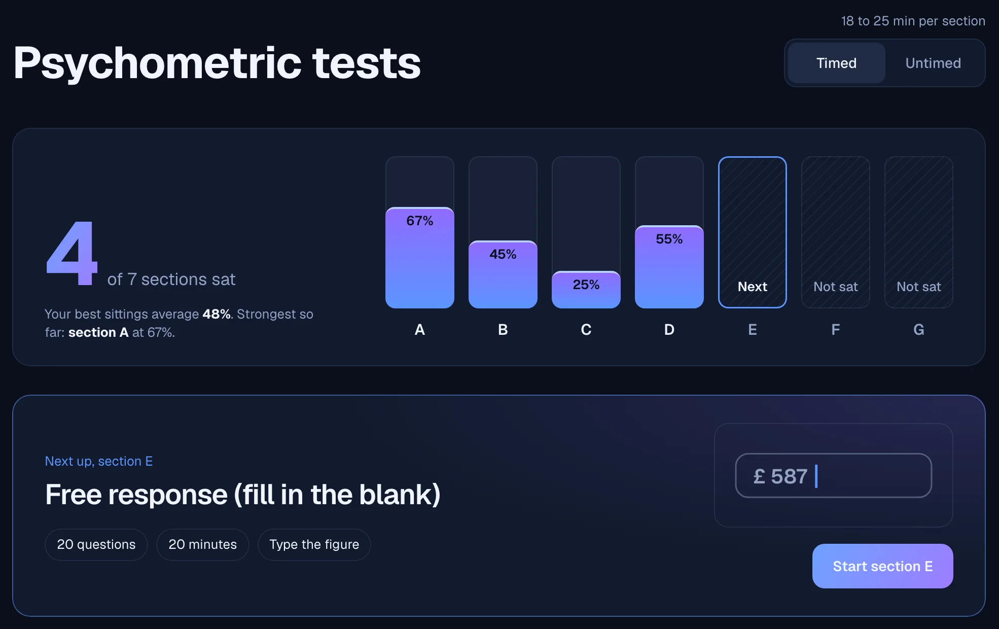
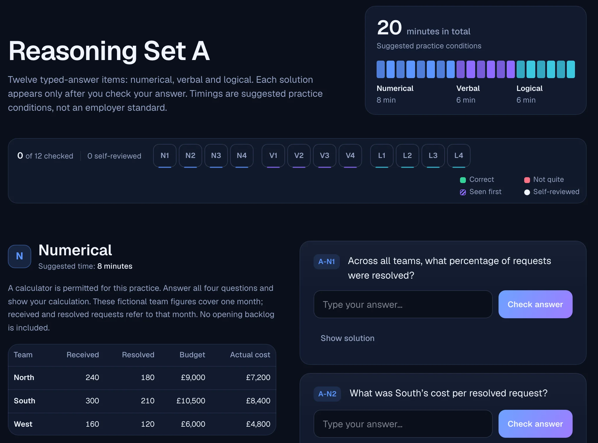

Pick your track
Graduate Programme: final year & graduates
It sets your deadlines and your score weights.
Highest bar, leadership depth required, technical & commercial rigour.
Graduate & internship recruiting
Know your score. Fix your gaps. Land the offer.

The real product, with example data. Go on, touch it.
Graduate Programme: final year & graduates
It sets your deadlines and your score weights.
Highest bar, leadership depth required, technical & commercial rigour.
Scored out of 100. Weak bullets rewritten.


Six areas, weighted for your track.
Switch track above. Watch the weights move.
16
Graduate Programme weightings
A preparation indicator, not a prediction of an offer.
Your six areas Tap a bar
12 stages5 phases0 locked

Every session moves your score.
Built from the founders' live recruiting experience.
24 cases20 sectorsTry question 3
UK dental practice roll-up
A PE fund wants a c.40-practice platform plus 10 bolt-ons a year. Should it proceed?
| Line | Value |
|---|---|
| Revenue (4 surgeries) | £900k (£225k per chair) |
| Clinician pay | 45% of revenue (£405k) |
| Materials and lab | 12% (£108k) |
| Practice staff and premises | 25% (£225k) |
| Practice EBITDA | 18% (£162k) |
Using Exhibit 1, what is annual EBITDA per chair across the four-chair practice?
£900k revenue × 18% EBITDA margin ÷ 4 chairs = £40.5k per chair.
Top 20 questions509 moreHow to prepare each

7 sectionsSHL, Kenexa, Talent Q, Aon cut-e, Cappfinity stylesTimed or untimed

2 minutes60 sumsNo calculator. Try it.
0 answered
0% accuracy (0 correct)
2 sets12 items eachWorked solutions

1 of 5: Case studies
Every application. One board.
Drag Deloitte into Applying, or tap it.
Application Tracker
4 applicationsPlanned 2
Nothing here yet
Applying 1
Nothing here yet
Screening 0
Nothing here yet
Interviewing 1
Nothing here yet
2 planned, 1 applying, 1 interviewing.
Move Deloitte to Applying
38→84
“Goldman, Macquarie and Lazard in my pipeline by week three.”Amara, Economics, LSE
45→90
“Less time on my CV, more on cases. That changed everything.”James, Engineering, Imperial
33→79
“It flagged my answer bank after three video rejections.”Priya, PPE, Oxford
41→91
“Three weeks. I only drilled the gaps it flagged.”Olivia, Economics, Warwick
Readiness Score, before → after
£59
1 month of access
Choose 1 month£139
3 months of access
Choose 3 months£249
A full recruiting cycle
Choose 12 monthsFirst or second year: Spring Week. Penultimate year: Summer Internship. Sandwich course: Placement Year. Final year or graduated: Graduate Programme.
Applications close early and rolling recruitment rewards whoever moves first. A system beats talent without one.
It is built around consulting, IB and PE, and works just as well for Big 4, strategy and asset management.
Most prep helps you learn. This makes you execute: a weekly plan, a live score, deadlines and visible progress.
No platform can. It gives you the structure that improves your odds.